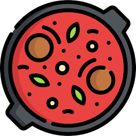

Meatball & Tomato Soup Recipe

Forget fancy, this soup's all about cozy! Think juicy meatballs swimming in a rich tomato batch, with little bits of couscous for extra fun. This dish is prefect for chilly nights or anytime you need a hug from the inside.
Ingredients
- 1 onion, finely chopped
- 2 red peppers, deseeded and sliced
- 1 garlic clove, crushed
- ½ tsp chilli flakes
- 2 x 400g cans chopped tomatoes
- 100g giant couscous
- 500ml hot vegetable stock
- 12 pork meatballs
- 150g baby spinach
- ½ small bunch of basil
- grated parmesan, to serve (optional)
Steps
- Heat the oil in a saucepan. Fry the onion and peppers for 7 mins, then stir through the garlic and chilli flakes and cook for 1 min. Add the tomatoes, giant couscous and veg stock and bring to a simmer.
- Season to taste, then add the meatballs and spinach. Simmer for 5-7 mins or until cooked through. Ladle into bowls and top with the basil and some parmesan, if you like.